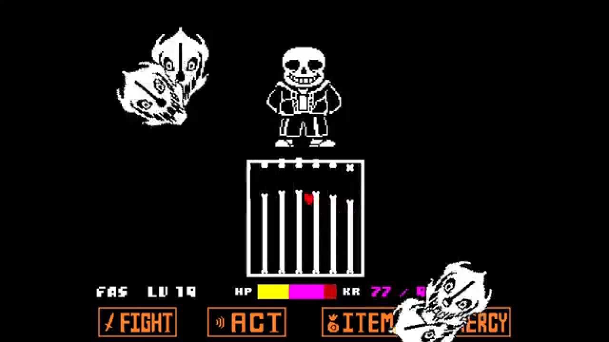
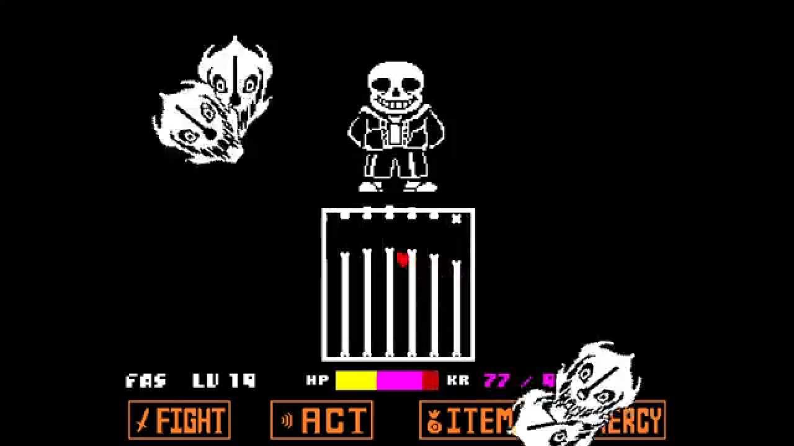
 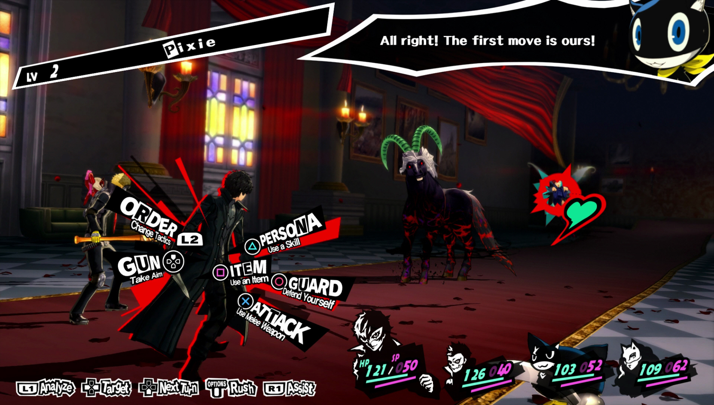
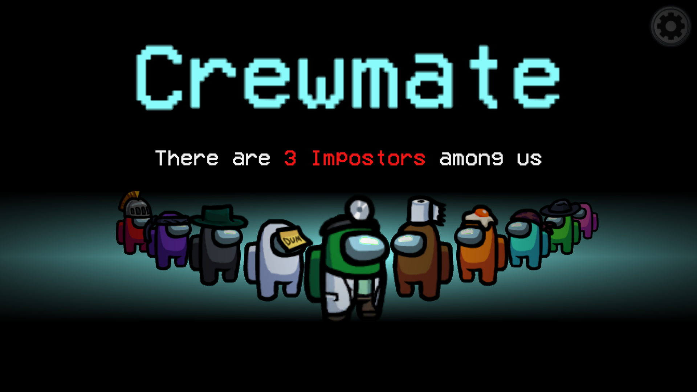
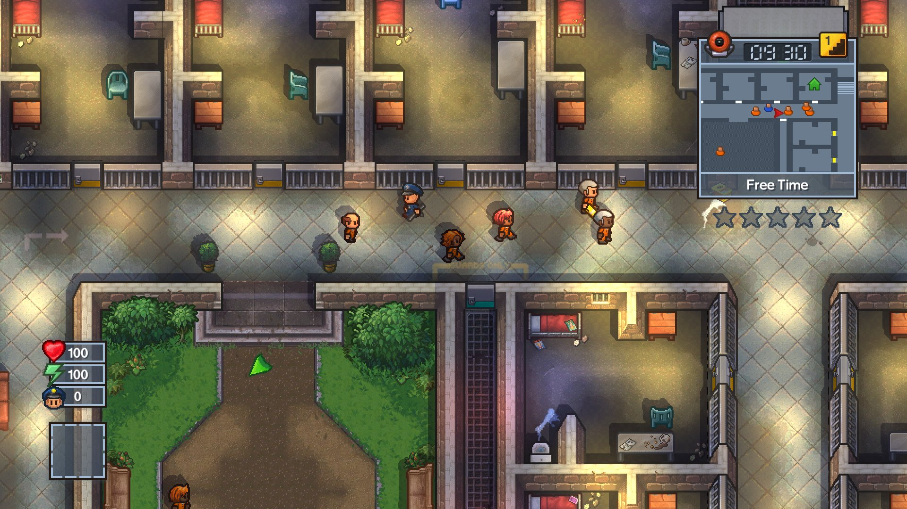
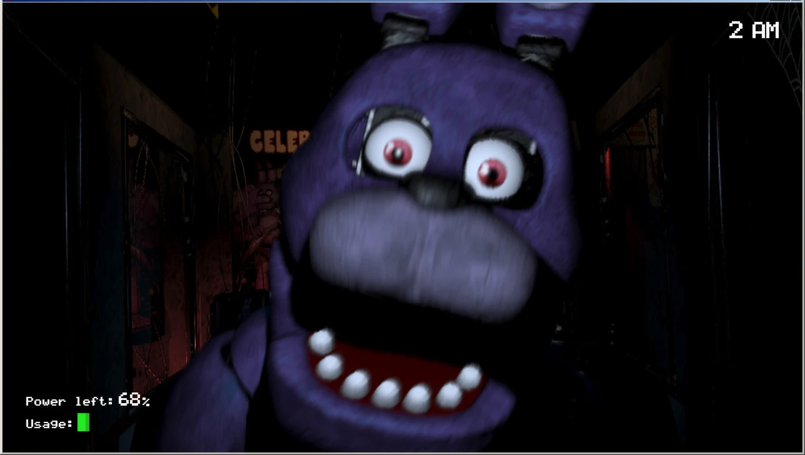
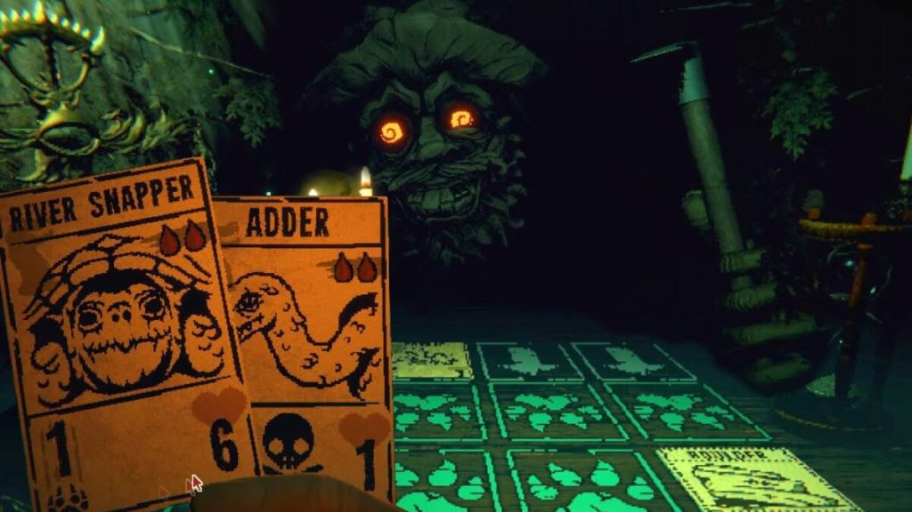
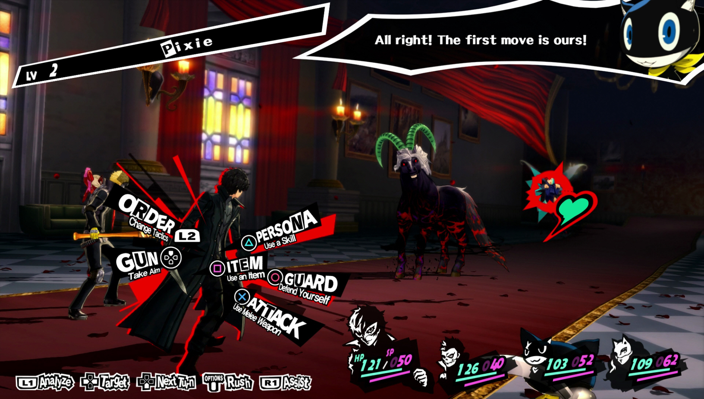
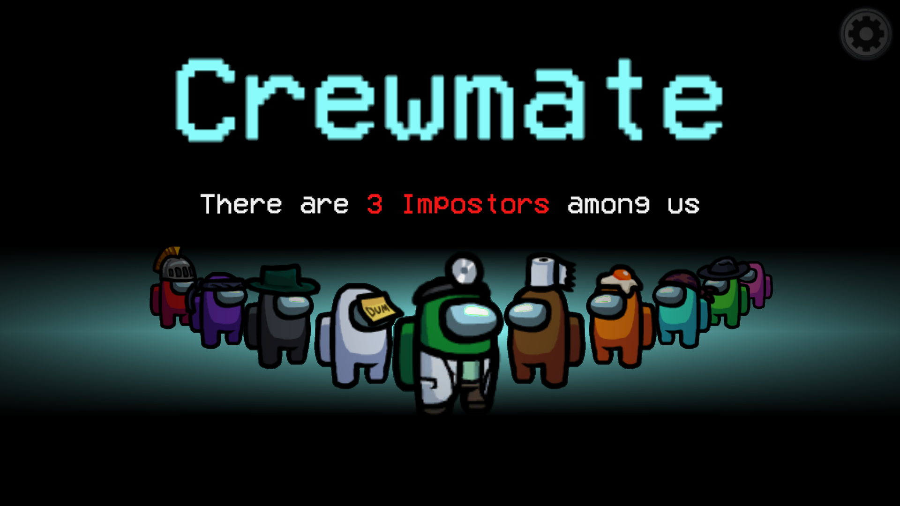
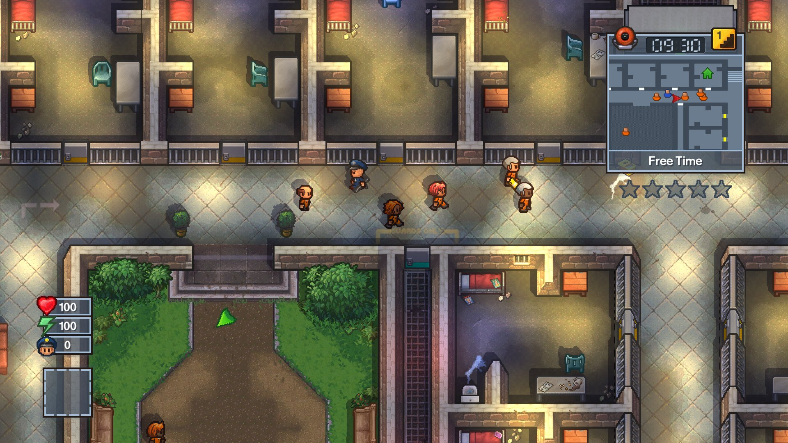
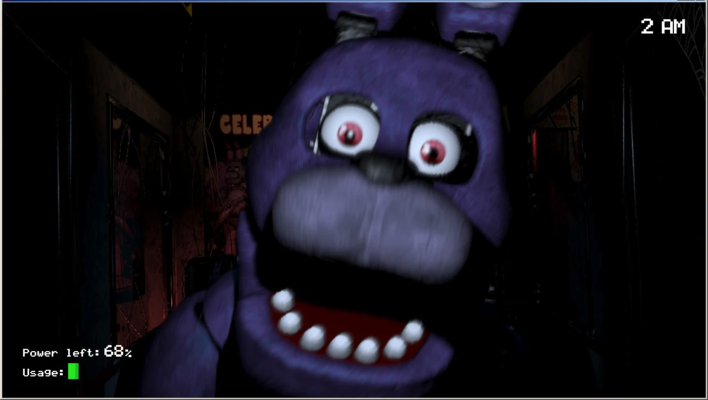
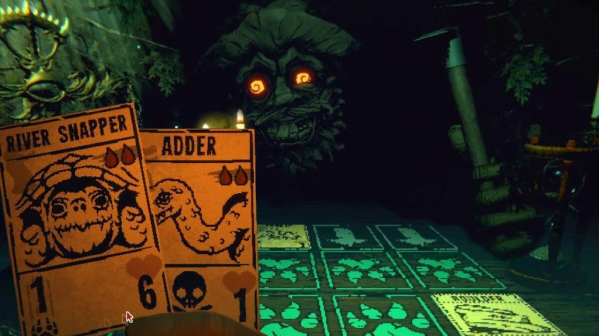
Een van mijn favoriete dingen om te doen in mijn vrije tijd is om te gamen, dit is al zo sinds dat ik 7 jaar oud was. Het lijkt mij hierom dus geweldig om voor de volgende generaties een mooie jeugd te maken net zo geweldig als degene die ik zelf had, ofwel ik wil video games maken. Als ik video games ga maken wil ik het liefst het codeer gedeelte doen, daarom wil ik een studie in ICT volgen, zodat ik mijn droom waarheid kan maken.
Ik heb de passie en het talent om deze studie te doen, vanaf het begin van de middelbare school heb ik al gezegd dat ik dit wou gaan doen en geen enkel moment heb ik aan die keuze getwijfeld. Nu ik na al die jaren hier ben ga ik zeker niet op geven, zelfs al krijg ik een negatief advies, dan laat ik het daar niet bij liggen en zal laten zien dat dit echt iets voor mij is.
Ik heb misschien nog geen echte bevestiging dat dit echt iets voor mij is, maar ik weet zeker dat ik deze studie aan kan. Hiervoor heb ik 6 jaar vwo gedaan, hierdoor heb ik een mindset gekregen dat wanneer ik iets niet begrijp dat ik research doe zodat ik het begrijp. Ik heb geleerd hoe ik hard moet werken, hard moet leren en hoe ik op problemen oplossingen kan vinden. Als dit niet genoeg is om mensen te overtuigen dat ik goed genoeg ben voor deze studie, dan begrijp ik dat, maar vertrouw me, ik zal niet falen.
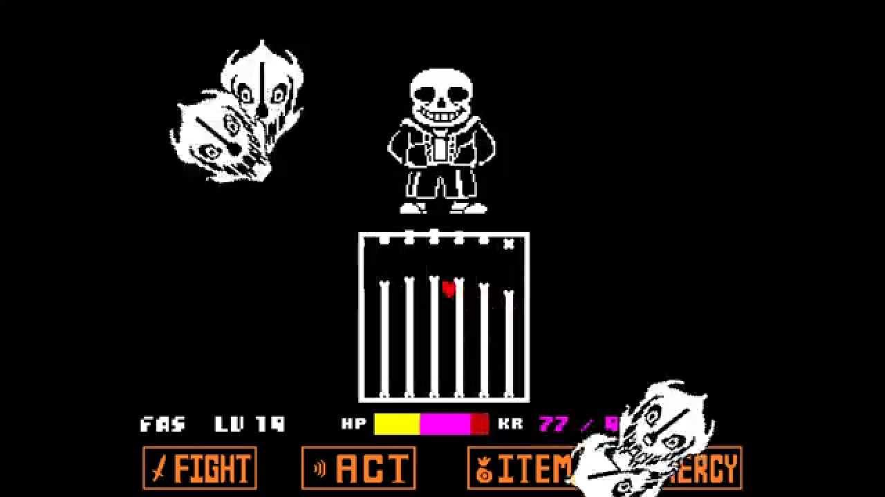
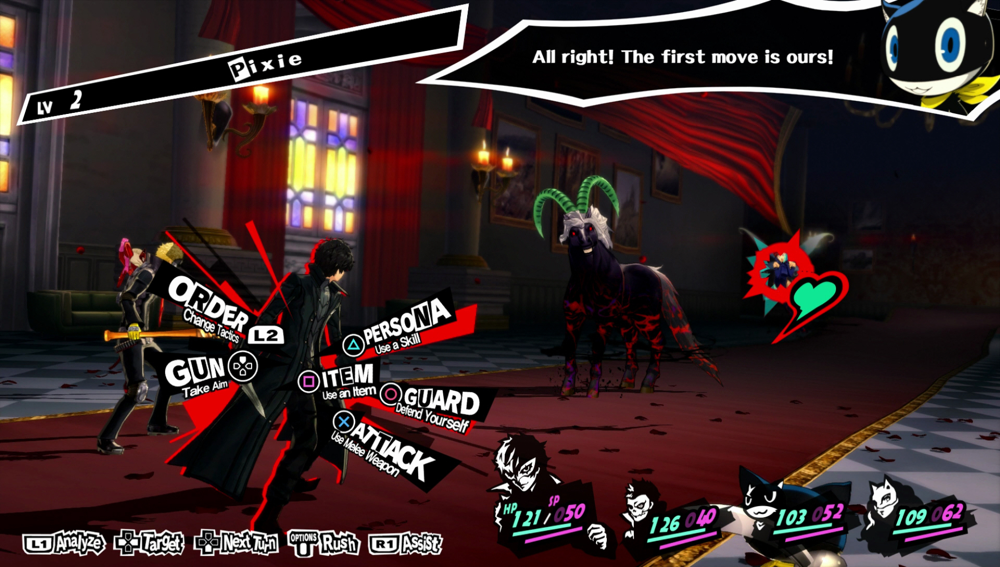
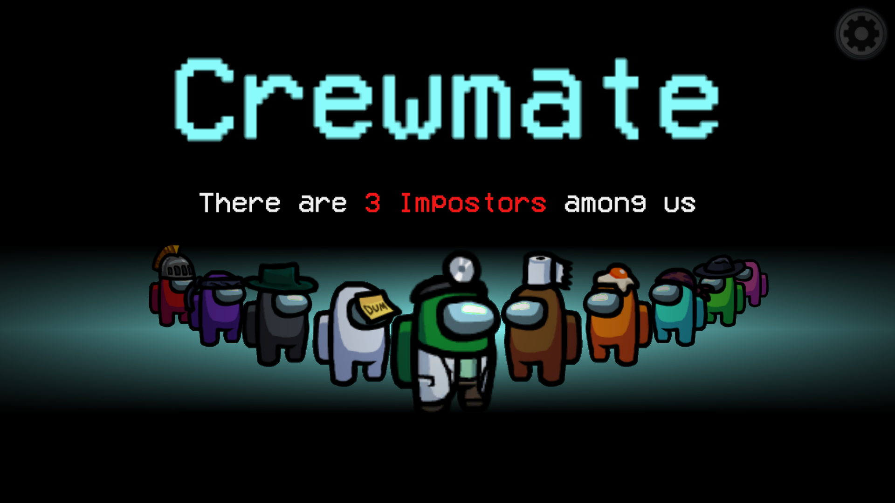
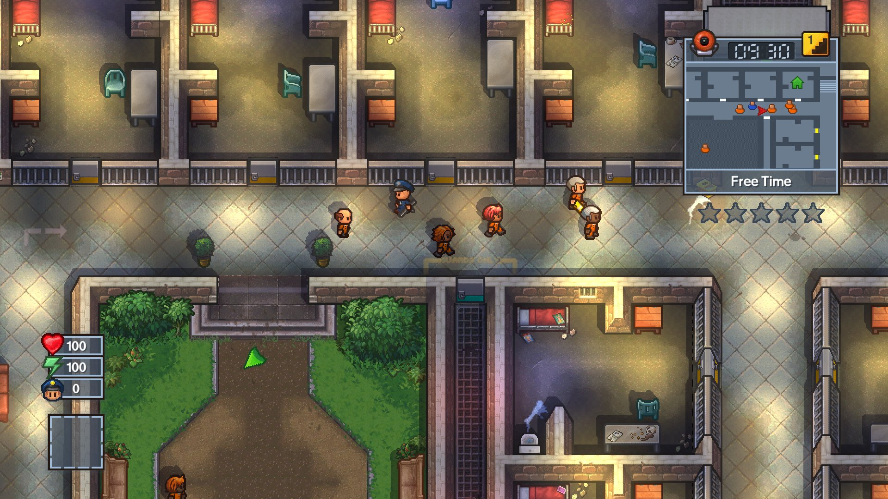
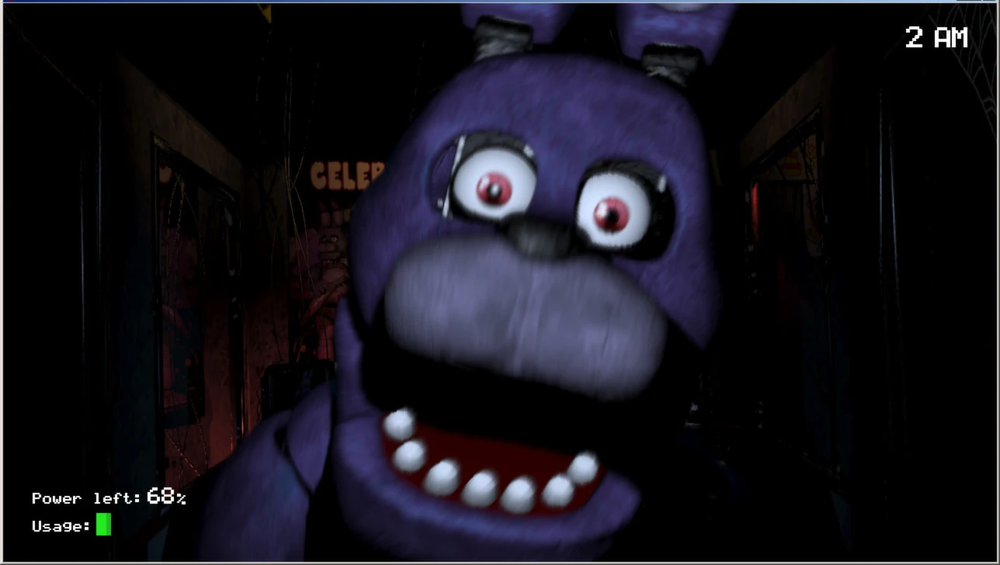
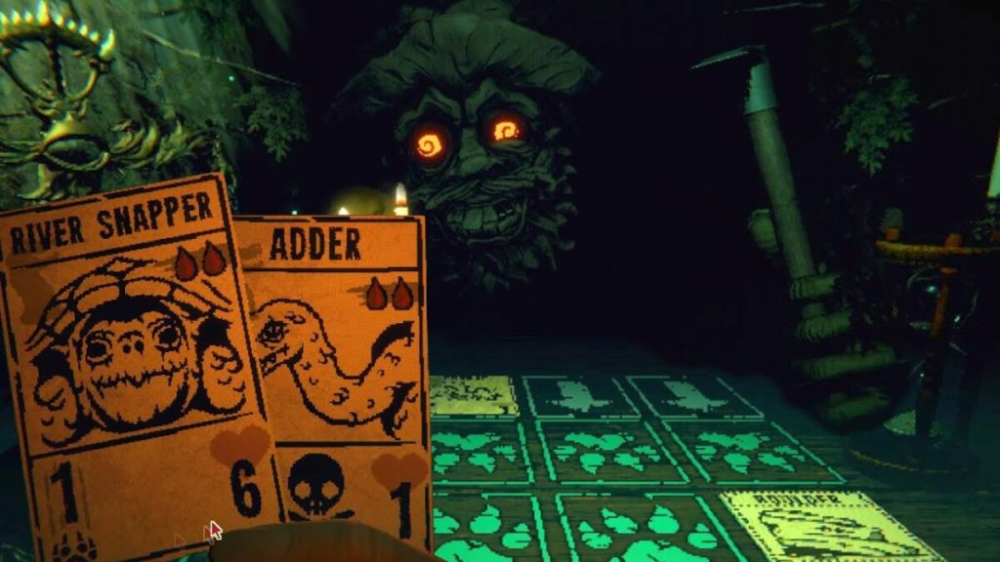